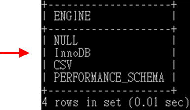

目錄
03 - 資料庫的基本操作
首先建立資料庫，這是使用 MySQL 各種功能的前提
3.1 - 建立資料庫
MySQL 指令不區分大小寫
show databases;
create database test_db;
show create database test_db;
3.2 - 刪除資料庫
drop database test_db;
create database test_db;
ERROR 1049 (42000): Unknown database 'test_db'
3.3 - MySQL 8.0 的新特性 — 系統表全部為 InnoDB表
MySQL 8.0 開始，系統表全部換成交易型的 InnoDB表，預設的 MySQL 實例將不包含任何 MyISAM表，除非手動建立 MyISAM表
select distinct(engine) from information_schema.tables;

3.4 - 綜合案例 — 資料庫的建立和刪除
步驟 1 建立資料庫 zoo
步驟 2 選擇目前資料庫為 zoo，並檢視 zoo 資料庫的資訊
步驟 3 刪除資料庫 zoo
create database zoo;
use zoo;
show create database zoo \G;
drop database zoo;
3.5 - 專家解惑
3.6 - 經典習題